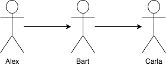

Atomic swaps
What are Atomic swaps
Atomic swaps or cross-chain atomic swaps [1] in a nutshell are decentralized exchanges, but only for cryptocurrencies. This allows multiple parties to exchange two different crypto currencies in a trustless environment. If one party defaults or fails the transaction, neither party can "run off" with the anyone's money. For this to work, we will require two technologies: a payment channel and hashed timelock contracts. An implementation of a payment channel is the lightning network.
Hashed Timelock Contracts
Hashed Timelock Contracts (HTLC) [2] is one of the most important technologies required for atomic swaps. This is a payment class that uses hashlocks and timelocks to require certain public knowledge before doing a payment, otherwise the payment is reversed. HTLCs are also crucial in the lighting network [3].
Here is a quick example of how a HTLC works:

In this example Alex's wants to pay Carla, but he does not have an open payment channel to Carla. But he does have an open channel to Bart who does have an open channel to Carla.
- Carla generates a random number and gives the hash of the number to Alex.
- Alex pays Bart but adds the condition that if Bart wants to claim the payment he has to provide the random number that generated the hash Carlo gave to Alex.
- Bart pays Carlo, but he adds the same condition to the payment.
- Carla claims the payment by providing the random number, and thus exposing the random number to Bart.
- Bart uses the random number to claim the payment from Alex.
If the payment to Carla does not go through the timelock in the contract will reverse all transactions.
Atomic vs Etomic
For an atomic swap transaction to happen, both cryptocurrencies must use the same hashing function as this is crucial for HTLC to function. Etomic swaps was created in an attempt to make atomic swaps happen between Bitcoin tokens and Ethereum based tokens.
Examples of current atomic swaps and implementations
#1 Manual method
An article was posted on Hackernoon [3] showing the exact steps that is required for doing an atomic swap using cli.
The requirements for this method can be listed as follows:
- Full nodes on both parties.
- Atomic swap package [[4].
- Use of supported coins (UXTO based protocol coins, eg Bitcoin, Litecoin, Viacoin).
- Power user.
#2 Atomic Wallet
Atomic wallet [5] is an atomic swap exchange. They allow two parties to trade with them as a third party. The process looks as follows:
- Party A select an order from the BitTorrent order book.
- Party A enter an amount of coin to swap or coin to receive.
- Party A confirm the swap.
- Party B receives notification.
- Party B confirms the swap.
- First party and Second party’s Atomic Wallet checks the contracts.
- Both receive their coins.
#3 BarterDEX
BarterDEX is a decentralized exchange created by Komodo [6] but it works with electron servers or native. BarterDEX at its core is more like an auction system then a true decentralized exchange. It also uses a security deposit in the form of Zcredits to do swaps without waiting for confirmation.
BarterDEX also supports Etomic swaps. These work by keeping the payments locked in a etomic blockchain which will act as a third party. Although swaps have been done, it is stated as not yet production ready [7]. Currently (July 2018) its only possible to use Barterdex out of the cli [8]. Barterdex charges a 0.1287% fee for a swap [9].
References
[1] Sudhir Khatwani (2018) What Is Atomic Swap and Why It Matters?, Coinsutra. Available at: https://coinsutra.com/atomic-swap/ (Accessed: 12 July 2018).
[2] Vohra, A. (2016) What Are Hashed Timelock Contracts (HTLCs)? Application In Lightning Network & Payment Channels, Hackernoon. Available at: https://hackernoon.com/what-are-hashed-timelock-contracts-htlcs-application-in-lightning-network-payment-channels-14437eeb9345 (Accessed: 12 July 2018).
[3] Poon, J. and Dryja, T. (2016) The Bitcoin Lightning Network: Scalable Off-Chain Instant Payments v0.5.9.2. Available at: https://lightning.network/lightning-network-paper.pdf.
[3] Hotshot (2018) So how do I really do an atomic swap, Hackernoon. Available at: https://hackernoon.com/so-how-do-i-really-do-an-atomic-swap-f797852c7639 (Accessed: 13 July 2018).
[4] open source (ISC) (2018) ‘viacoin/atomicswap’. github. Available at: https://github.com/viacoin/atomicswap.
[5] Atomic (2018) Atomic wallet. Available at: https://atomicwallet.io/ (Accessed: 13 July 2018).
[6] Komodo (2018) BarterDEX. Available at: https://komodoplatform.com/decentralized-exchange/ (Accessed: 13 July 2018).
[7] Artemii235 (2018) ‘etomic-swap’. github. Available at: https://github.com/artemii235/etomic-swap.
[8] Komodo (2018) ‘Barterdex’. github. Available at: https://github.com/KomodoPlatform/KomodoPlatform/wiki/Installing-and-Using-Komodo-Platform-(barterDEX).
[9] Komodo and Hossain, S. (2017) barterDEX Whitepaper v2. Available at: https://github.com/KomodoPlatform/KomodoPlatform/wiki/barterDEX-Whitepaper-v2.
Contributors
- https://github.com/SWvheerden